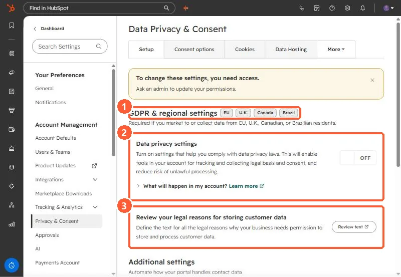
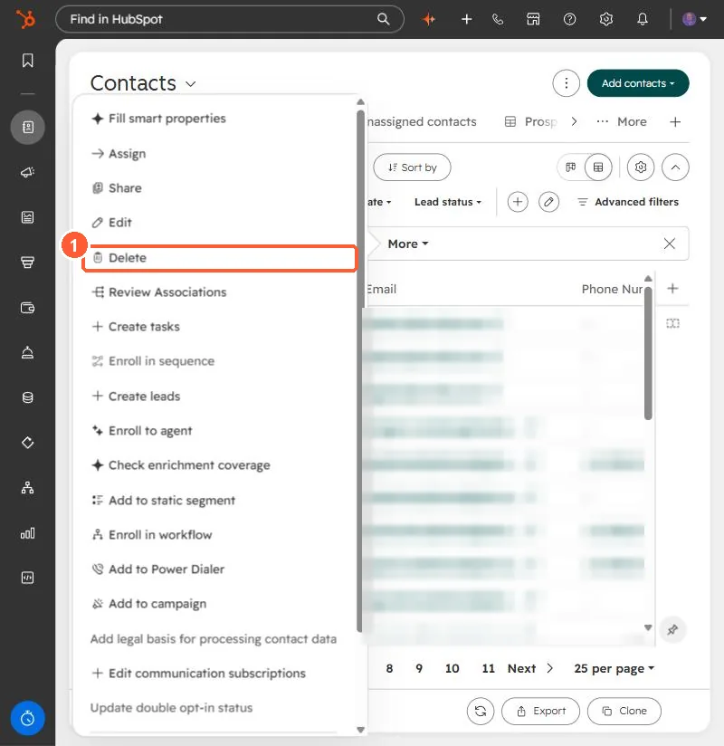
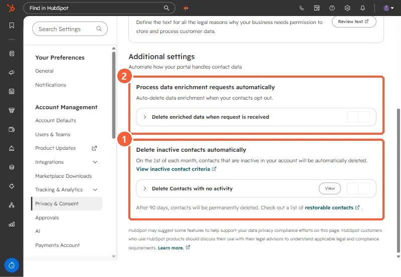

Short answer
Turn on Data privacy settings in Settings, Privacy & Consent if you market to people in the EU, U.K., Canada or Brazil (it is on by default for accounts with data stored in the EU). That adds legal basis tracking, unsubscribe links in one-to-one email, and stops open and click tracking for contacts without a legal basis. For deletion there are three routes: a normal delete (restorable for 90 days), a GDPR delete (permanent, no recycle bin, also available through the API), and Delete inactive contacts automatically, which clears contacts that have been inactive longer than the period you set on the 1st of each month.
1. Data privacy settings
Open Settings, Privacy & Consent. Under GDPR and regional settings, the regions covered are listed (1), the Data privacy settings switch turns the tools on (2), and the legal reasons card explains what it does (3). It is off in my demo portal.


Turning it on:
- turns on unsubscribe links in one-to-one and sequence emails for users who do not have them yet,
- shows banners in the HubSpot Sales extension or add-in on contacts with no legal basis for processing,
- lets you record consent and legal basis through imports, bulk edit or manual entry, and
- stops open and click tracking being added for contacts with no legal basis.
Turning it off does not turn off the cookie consent banner, which is a separate setting, see cookies and the consent banner. HubSpot says your legal team is the right source for compliance advice.
2. Delete contacts: normal, bulk, or GDPR
| Delete type | Where | Recoverable? |
|---|---|---|
| Normal delete | The record, or select records in a view and choose Delete | Yes, for 90 days from Restore records |
| Bulk delete from an index page | Select records, More, Delete (needs bulk delete permission) | Yes, for 90 days |
| GDPR or permanent delete | A permanent (GDPR) delete, or the API | No. Gone for users immediately, purged from HubSpot within 30 days |


Export the view before a bulk delete so you have a copy past the 90 days. See restoring deleted data and exports.
3. GDPR delete through the API
The contacts API has a GDPR delete that permanently removes a contact and associated content. Set idProperty to email to identify the contact by email address instead of record ID:
POST https://api.hubapi.com/crm/v3/objects/contacts/gdpr-delete
{
"objectId": "user@example.com",
"idProperty": "email"
}Use it when deletion requests arrive through another system, such as a privacy request form or ticketing tool. Like a GDPR delete in the app, it skips the recycle bin. Authenticate it like any other API call, see service keys.
4. Delete inactive contacts automatically
Under Privacy & Consent, Additional settings, Delete inactive contacts automatically (1) is a data retention policy. A second setting, Process data enrichment requests automatically (2), deletes enriched data when a contact opts out.


- HubSpot checks Create date, Time of last session, Last marketing email open date and Last engagement date against the inactivity period you set. A contact is inactive if it was created before the period and those values are unknown or not updated within it.
- Deletion runs on the 1st of each month.
- Deleted contacts sit in the recycle bin for 90 days, then are permanently deleted.
- Deleted contacts drop out of reports, so HubSpot recommends checking the reporting impact first.
5. What is changing for 2027
- The GDPR delete endpoint is on HubSpot's legacy v3 docs. HubSpot's date-based API versions are replacing them. v3 keeps working for now, but plan new privacy integrations on the dated URLs. See API versioning.
- Retention by setting. Delete inactive contacts automatically applies the same inactivity rule every month, so retention does not depend on someone remembering a cleanup.
- Enrichment and privacy meet. If you use HubSpot's data enrichment, turn on automatic processing of enrichment deletion requests. See data enrichment settings.
Common questions
Do I need data privacy settings if I am in the U.S.?
If you market to people in the EU, U.K., Canada or Brazil, those are the regions HubSpot lists. Ask your legal team.
Can I undo a GDPR delete?
No. It bypasses the recycle bin. A normal delete can be undone for 90 days.
When does Delete inactive contacts run?
On the 1st of each month. Contacts it deletes can be restored for 90 days.
Who can bulk delete contacts?
Users with bulk delete permission. It is separate from regular delete permission.
Sources
- HubSpot Knowledge Base: Manage data privacy settings
- HubSpot Knowledge Base: Track legal basis of processing
- HubSpot Knowledge Base: Manage data retention policy settings for inactive contacts
- HubSpot Knowledge Base: Restore deleted records
- HubSpot Knowledge Base: HubSpot user permissions guide
- HubSpot developer docs: Permanently delete a contact (GDPR)